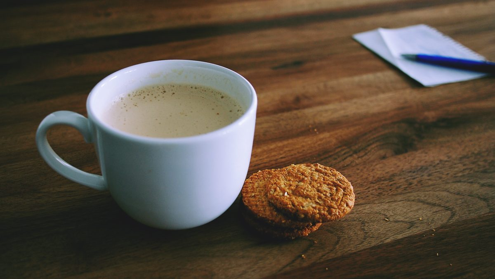

店のこと
部位を一つずつ、読んでみる
お店についてお伝えできるのは、所在地とInstagramだけです。ほかは準備中。ここでは図の見方をご紹介します。



図の見方
番号と部位名
- 1バルブマットの端に付けて、空気を入れたり抜いたりする口の部分。
- 2表生地体をあずける側の、表になる面の布。
- 3空気室縦に並んだ細長い部屋。空気をためる主役の部分。
- 4底生地床に触れる側の、下になる面の布。
- 5固定バンド2本の横帯。ふくらんだ形をそろえて留める部分。
- 6収納袋たたんだマットを入れて持ち運ぶための袋。
ひとこと
お店の理念・由来とは無関係です
エアマットという題材は、制作側の連想で選んだものです。お店の由来や考え方、提供内容を説明するものではありません。お店のことは、確認できた所在地とInstagramだけを載せています。